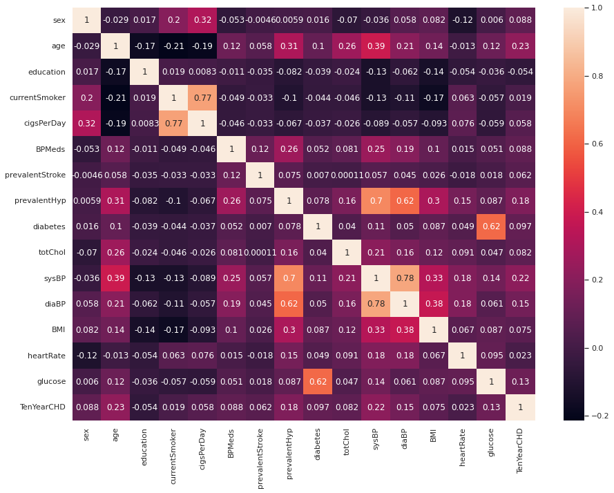
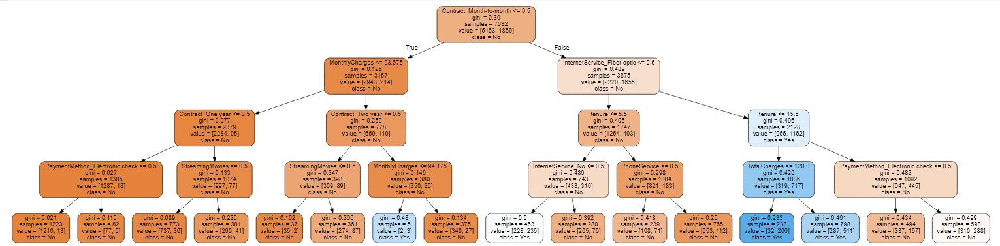
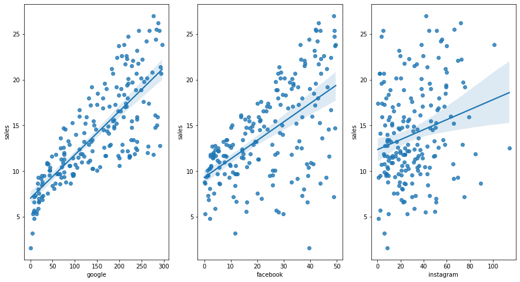
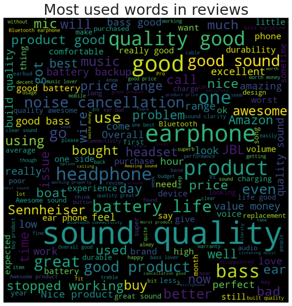

An accountant-turned-aspiring-data scientist
Diabetes is the one of the leading comorbidities in Malaysia. The framingham dataset is used to predict whether one would be most likely be diabetic, based on certain health information and living lifestyle. Early detection would increase success rate of controlling this disease, as with early treatment.
How can you know?
Exploratary analysis is performed using heatmaps, and also countplots.
Decision tree is used to predict the likelihood of one getting diabetes, based on the Framingham dataset.
Telecommunication industry is a very competitive industry, with majority of the population having subscripted to a phone service, mobile phone service, and internet service. Generally monopolized by a number of companies, customers have the choice to move from one telco service provider to another. For the telco companies, being able to predict whether or not a customer will churn will allow for counter measures to be implemented, to prevent customer churning, and at the same time enable a more accurate revenue forecast accordingly.
Decision tree is used to perform the prediction of whether the customer will churn or not. Exploratary data analysis done include using boxplot, countplot, and heatmap.
These days, to get ahead, most businesses would be spending a certain amount of marketing expenses onto social media suc as facebook, instagram, google etc.
So how would you know what would be the "best" proportion to spend on each of these various platforms?
Using linear regression, after taking into account the R-square score, we can use it to predict how much should be spent based on the revenue generated by each dollar spent on each of these social media platforms.
These days, nothing is short from the general population to leave reviews and comments on products sold or purchased. As a business, it is important to analyze comments and feedback left by your customers after purchasing your product. It allows for your to take further action to resolve the disatisfaction, or to show your appreciation on the time taken by your customers to leave a positive review to boost your business.
But it takes time to read reviews and comments, emails especially if you are dealing with them in the thousands or even hundreds of thousands daily.
Using Natural Language Processing, sentiment analysis can be performed, by way of cosine similarity and TF-IDF scores. 